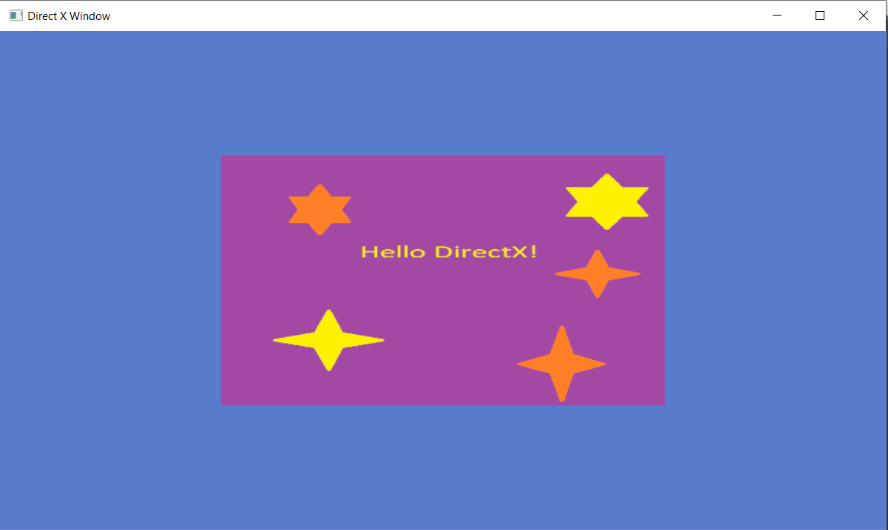

In Part 2 we finished with rendering our colorful triangle. The next step is to now texture that triangle. Texturing triangles is a crucial part of games both 2d and 3d. Let's get going!
To get our texture triangle first we need to load an image to use as the texture. We'll use Sean Barrett's stb_image library to load the png we'll use. We then need to upload it to the GPU. Let's do that now.
We then include it at the top with the other header files.
We drop an image into our project folder aswell which we will use as the source texture we will sample from.
We can now use stb image to load the png.
To create our ID3D11Texture2D we first create a D3D11_TEXTURE2D_DESC describing the texture.
We set the width, height, and format of the texture. We also set the usage to iD3D11_USAGE_IMMUTABLE because we won't be changing the texture at runtime. And set the Bind Flags to being a D3D11_BIND_SHADER_RESOURCE.
We also need to create a D3D11_SUBRESOURCE_DATA as we did with the vertex data that contains the actual image data.
We can now create the texture using our d3d11Device.
You'll notice this is very similar to create the vertex buffer where we created a description and a subresource_data which we passed to the createBuffer function.
We've now successfully created our texture. To use it in our shader we need to create a ID3D11ShaderResourceView.
Now that the image data is on the GPU we no longer need it on the CPU so we can free the image data:
When we use the texture view in our shader, we also need a sampler that knows how to sample the texture. These are things like the filter (LINEAR or POINT sampling [1] ), what color the border of the image should be, should we clamp or wrap values if we go out of bounds?
This is different from OpenGL in which the sampler settings are coupled with the texture. So the texture can only be sampled one way. In Direct3d you can use different samplers for the same texture if you'd like.
Now that we've got our Texture, our TextureView, and our Sampler we've got all the resources we need to add a texture to our triangle. The next thing we need to do is update our vertex buffer to handle texture coordinates.
As we saw in the last lesson, we can add any data at each vertex and it will be interpolated across the surface of the triangle. We did color and position last time. This time we'll add texture coordinates (also known as UV coordinates) instead of color.
We first change the data in our buffer to contain two triangles to form a Quad. With each vertex containing a position and a texture coordinate.
This time there are only 4 floats per vertex so we update our stride as well.
You'll also notice the top of the quad is texture coordinate 0 in the Y axis and 1 at the bottom. This is because STB_IMAGE loads images with top to bottom - 0,0 pixel is the top left of the image [2] .
Since we are using the texture coordinates and not the color at each vertex, which is 2 floats not 4 floats per vertex, we need to update the InputLayout. We remove the "COL" element and replace it with "TEX" as this is the name we gave it in our VS_Input struct. We also change the size of the element to be 2 floats instead of 4.
The next thing we'll do is update our shader to actually make use of the texture we're going to be passing in.
Instead of passing in a color, we're now passing in a tex-coordinate in our VS_Input struct. We pass that through to the pixel shader in the VS_Output Struct.
We declare the texture and sampler we're going to be using:
In our pixel shader, we sample our texture.
The whole shader looks like this:
The : register(t0); next to the texture and sampler declaration refers to the slot id these are in, which we make use of when we set the sampler and texture on the CPU side.
We've got everything we need to now draw our texture to the screen. We now need to tell the shader which texture and sampler to use when it draws our triangles.
Once we set our shaders in the game loop, we can then set the texture and sampler to their slot id (the register(t0); in our shader. The zero being the index of the slot):
The first parameter is the start slot index, the second parameter is how many shader resources are in the array we're passing in. The final parameter is the array of resources we want to use.
If you compile and run the program you should see the testTexture.png appear.

That's it!
1. We loaded our texture to the CPU using stb_image.
2. We then uploaded the texture to the GPU by creating a ID3D11Texture2D.
3. We created a ID3D11ShaderResourceView of our Texture.
4. We created a ID3D11SamplerState to know how to sample this texture.
5. We updated our vertex data to draw a Quad and have texture coordinates.
6. We updated our InputLayout to know about texture coordinates in the shader.
7. Updated our Shader to sample from the texture.
8. When we go to draw our Triangles we assign the texture view and sampler to the correct slots in our shader.
1. What three resources do we need to create to sample our texture in the shader?
[ID3D11Texture2D, ID3D11ShaderResourceView, ID3D11SamplerState]
2. Is the way we sample a texture and the texture coupled together in DirectX?
[No unlike OpenGL the way we sample a texture like the filter mode is separate to the texture]
3. What do we need to do to use our texture when we draw our vertexes each frame?
[Assign the textureView and the SamplerState to their slot ids in the shader]
4. How can you draw a Quad in 3d and 2d graphics?
[Sticking 2 triangles together]
[1] Point Sampling is equivalent to Nearest Sampling in OpenGL
[2] You can change the first pixel to be the bottom left if you'd prefer using stbi_set_flip_vertically_on_load(int flag_true_if_should_flip); function. You'd also have to change the texture coordinates of the vertex buffer.